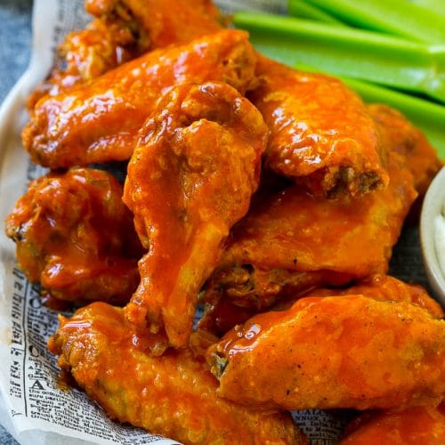

Buffalo Wings

Description
One of the most popular bar snacks in the U.S. was actually born in a small Buffalo, NY, bar in 1964. Without the Anchor Bar and the ingenuity of its owner (she wanted to re-purpose leftover cooked wings to feed her family), many a game day, bar-hopping American would likely never know you could combine crispy wings bathed in sweet-hot sauce.
Ingredients
- 2 lb. chicken wings
- 2 tbsp vegetable oil
- 1 tsp garlic powder
- Kosher salt
- Freshly ground black peppper
- 1/4 cup hot sauce (such as Frank's)
- 2 tbsp honey
- 4 tbsp butter
- Ranch dressing, for serving
- Carrot sticks, for serving
- Celery sticks, for serving
Steps
- Preheat oven to 400 degrees and place a wire rack over a baking sheet. Toss wings with oil and seaon with salt, pepper, and garlic powder. Tansfer to baking sheet.
- Bake until golden and skin is crispy. Around 50-60 minutes, flipping halfway through
- In a small saucepan, whisk together hot sauce and honey. Bring to simmer then stir in butter. Cook until butter is melted and slightly reduced, about 2 minutes. Heat broiler on low. Transfer baked wings to a bowl and toss with buffalo sauce until completely coated. Return wings to rack and broil—watching carefully!—until sauce caramelizes, 3 minutes. Serve with ranch dressing and vegetables.